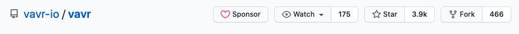
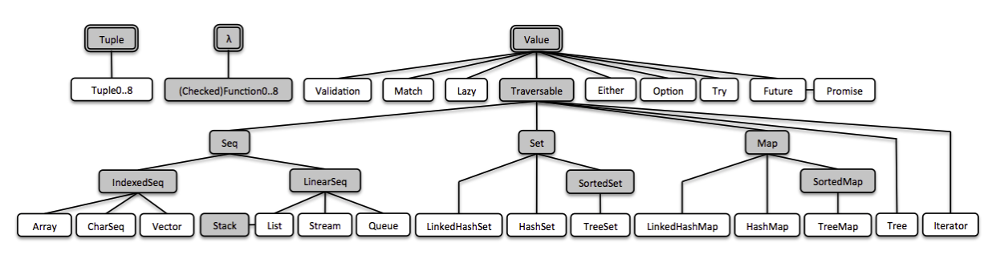
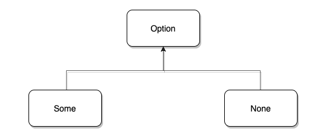
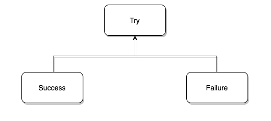

何方神圣？
众所周知， Java8 在一定程度上支持了函数式编程，但标准库提供的函数式 API 不是很完备和友好。
为了更好的进行函数式编程，我们就不得不借助于第三方库，而 VAVR 就是这方面的佼佼者，它可以有效减少代码量并提高代码质量。
VAVR 可不是默默无闻之辈，它的前身是发布于 2014 年的 Javaslang，目前在 github 上有着近 4k 的 star。

看到这儿，很多人就说我标题党了，一个 Java 库还来颠覆 Java ？
这可不不是我玩震惊体，打开 VAVR 的官网 ，它的首页就用加粗字体写着 「vavr - turns java™ upside down」
这翻译过来不就是颠覆 Java 吗？
食用指南
阅读本文需要读者对 Java8 的 lambda 语法和常用 API 有一定的了解。
由于是一篇框架的介绍文（地推 ing），为了避免写成官方文档的翻译，本文会有一些约束
- 不会穷尽所有特性和 API，仅做抛砖引玉
- 不会深入到源码细节
关于示例代码，基本会以单元测试的形式给出并保证运行通过
注：本文使用的 VAVR 版本为 0.10.3，JDK 版本为 11。
先来个概览

集合，全新的开始
不得不说 Java8 的集合库引入 Stream 以后确实很好用，但也正是因为使用了 Stream，不得不写很多样板代码，反而降低了不少体验。
// of 方法是 Java9 开始提供的静态工厂
java.util.List.of(1, 2, 3, 4, 5)
.stream()
.filter(i -> i > 3)
.map(i -> i * 2)
.collect(Collectors.toList());
而且 Java 的集合库本身是可变的，显然违背了函数式编程的基本特性 - 不可变，为此 VAVR 设计了一套全新的集合库，使用体验无限接近于 Scala。
更简洁的 API
io.vavr.collection.List.of(1, 2, 3, 4, 5)
.filter(i -> i > 3)
.map(i -> i * 2);
往集合追加数据会产生新的集合，从而保证不可变
var list = io.vavr.collection.List.of(1, 2)
var list2 = list
.append(List.of(3, 4))
.append(List.of(5, 6))
.append(7);
// list = [1, 2]
// list2 = [1, 2, 3, 4, 5, 6]
强大的兼容性，可以非常方便的与 Java 标准集合库进行转换
var javaList = java.util.List.of(1, 2, 3);
java.util.List<Integer> javaList2 = io.vavr.collection.List.ofAll(javaList)
.filter(i -> i > 1)
.map(i -> i * 2)
.toJavaList();
再来看一个稍微复杂一点的例子：过滤一批用户中已成年的数据，按照年龄对其分组，每个分组只展示用户的姓名。
/**
* 用户信息
*/
@Data
class User {
private Long id;
private String name;
private Integer age;
}
先用 Java 标准集合库来实现这个需求，可以看见 collect(...) 这一长串嵌套是真的很难受
public Map<Integer, List<String>> userStatistic(List<User> users) {
return users.stream()
.filter(u -> u.getAge() >= 18)
.collect(Collectors.groupingBy(User::getAge, Collectors.mapping(User::getName, Collectors.toList())));
}
再来看看 VAVR 的实现，是不是更简洁，更直观？
public Map<Integer, List<String>> userStatistic(List<User> users) {
return users.filter(u -> u.getAge() >= 18)
.groupBy(User::getAge)
.mapValues(usersGroup -> usersGroup.map(User::getName));
}
VAVR 的集合库提供了更多 Functional 的 API，比如
- take(Integer) 取前 n 个值
- tail() 取除了头结点外的集合
- zipWithIndex() 使得便利时可以拿到索引（不用 fori)
- find(Predicate) 基于条件查询值，在 Java 标准库得使用 filter + findFirst 才能实现
- …..
虽然代码实例都是用的 List，但是以上特性在 Queue、Set、Map 都可以使用，都支持与 Java 标准库的转换。
元组，Java 缺失的结构
熟悉 Haskell、Scala 的同学肯定对「元组」这个数据结构不陌生。
元组类似一个数组，可以存放不同类型的对象并维持其类型信息，这样在取值时就不用 cast 了。
// scala 的元组，用括号构建
val tup = (1, "ok", true)
// 按索引取值，执行对应类型的操作
val sum = tup._1 + 2 // int 加法
val world = "hello "+tup._2 // 字符串拼接
val res = !tup._3 // 布尔取反
当然，Java 并没有原生的语法支持创建元组，标准库也没有元组相关的类。
不过，VAVR 通过泛型实现了元组，通过 Tuple 的静态工厂，我们可以非常轻易的创建元组（ 配合 Java10 的 var 语法简直不要太美好）
import io.vavr.Tuple;
public TupleTest {
@Test
public void testTuple() {
// 一元组
var oneTuple = Tuple.of("string");
String oneTuple_1 = oneTuple._1;
// 二元组
var twoTuple = Tuple.of("string", 1);
String twoTuple_1 = twoTuple._1;
Integer twoTuple_2 = twoTuple._2;
// 五元组
var threeTuple = Tuple.of("string", 2, 1.2F, 2.4D, 'c');
String threeTuple_1 = threeTuple._1;
Integer threeTuple_2 = threeTuple._2;
Float threeTuple_3 = threeTuple._3;
Double threeTuple_4 = threeTuple._4;
Character threeTuple_5 = threeTuple._5;
}
}
如果没有 var，就得写出下面这样冗长的变量定义
Tuple5<String, Integer, Float, Double, Character> tuple5 = Tuple.of("string", 2, 1.2F, 2.4D, 'c');
目前，VAVR 最多支持构造八元组，也就是支持最多 8 个类型，而不是最多 8 个值。
当元组和「模式匹配」的配合使用时，那更是强大的一塌糊涂
PS：虽然现在提模式匹配有点早了（后面会再遇见的），不过我们仍然可以提前感受一下
var tup = Tuple.of("hello", 1);
// 模式匹配
Match(tup).of(
Case($Tuple2($(is("hello")), $(is(1))), (t1, t2) -> run(() -> {})),
Case($Tuple2($(), $()),(t1, t2) ->run(() -> {}))
);
上面的代码其实就等同于 if…else
// 等同于 if...else
if (tup._1.equalas("hello") && tup._2 == 1) {
// ... do something
} else {
// ... do something
}
除了 Option，还有 Try、Either、Future……
Java8 引入了 Optional 去解决臭名昭著的 NullPointerException，而 VAVR 也有一个类似的工具 - Option，但它却有着不同的设计。
除了 Option 外，VAVR 还实现了 Try、Either、Future 等函数式的结构，它们都是 Java 标准库没有但非常强大的工具。
Option
Option 与 Java 标准库的 Optional 很相似，都代表着一个可选值，但是两者的设计却是大不相同的。（VAVR 的 Option 设计和 Scala 更接近）
在 VAVR 中，Option 是一个 interface，它的具体实现有 Some 和 None

- Some: 代表有值
- None: 代表没有值
你可以通过下面的单元测试进行验证
@Test
public void testOption() {
// 通过 of 工厂方法构造
Assert.assertTrue(Option.of(null) instanceof Option.None);
Assert.assertTrue(Option.of(1) instanceof Option.Some);
// 通过 none 或 some 构造
Assert.assertTrue(Option.none() instanceof Option.Some);
Assert.assertTrue(Option.some(1) instanceof Option.Some);
}
而对于 java.util.Optional 来说，无论通过什么方式构造，都是同一个类型。
@Test
public void testOptional() {
Assert.assertTrue(Optional.ofNullable(null) instanceof Optional);
Assert.assertTrue(Optional.of(1) instanceof Optional);
Assert.assertTrue(Optional.empty() instanceof Optional);
Assert.assertTrue(Optional.ofNullable(1) instanceof Optional);
}
为什么两者会有这样的设计区别呢？
本质上来讲就是对 「Option 的作用就是使得对 null 的计算保证安全吗？」这一问题的不同回答。
下面的的两个测试方法，同样的逻辑，用 Option 和 Optional 却得出了不同的结果
@Test
public void testWithJavaOptional() {
// Java Optional
var result = Optional.of("hello")
.map(str -> (String) null)
.orElseGet(() -> "world");
// result = "world"
Assert.assertEquals("word", result);
}
@Test
public void testWithVavrOption() {
// Vavr Option
var result = Option.of("hello")
.map(str -> (String) null)
.getOrElse(() -> "world");
// result = null
Assert.assertNull(result);
}
在 VAVR 的测试代码中，通过 Optional.of("hello") 实际上得到了一个 Some("hello") 对象。
随后调用 map(str -> (String)null) 返回的仍然是一个 Some 对象（Some 代表有值），所以最终的 result = null，而不是 getOrElse(() -> "world") 返回的 world 字符串。
在 Java 的测试代码中，调用 map(str -> null) 时，Optional 就已经被切换为了 Optional.empty，所以最终就返回了 orElseGet(() -> "world") 的结果。
这也是函数式开发者们批判 java.util.Optional 设计的一个点
除了设计上的区别外， io.vavr.control.Option 比 java.util.Optional 也要多出更多友好的 API
@Test
public void testVavrOption() {
// option 直接转为 List
List<String> result = Option.of("vavr hello world")
.map(String::toUpperCase)
.toJavaList();
Assert.assertNotNull(result);
Assert.assertEquals(1, result.size());
Assert.assertEquals("vavr hello world", result.iterator().next());
// exists(Function)
boolean exists = Option.of("ok").exists(str -> str.equals("ok"));
Assert.assertTrue(exists);
// contains
boolean contains = Option.of("ok").contains("ok");
Assert.assertTrue(contains);
}
考虑到与标准库的兼容，Option 可以很方便的与 Optional 进行互转
Option.of("toJava").toJavaOptional();
Option.ofOptional(Optional.empty());
Try
Try 和 Option 类似，也类似于一个「容器」，只不过它容纳的是可能出错的行为，你是不是马上就想到了 try..catch 结构?
try {
//..
} catch (Throwable t) {
//...
} finally {
//....
}
通过 VAVR 的 Try，也能实现另外一种更 functional 的 try…catch。
/**
* 输出
* failure: / by zero
* finally
*/
Try.of(() -> 1 / 0)
.andThen(r -> System.out.println("and then " + r))
.onFailure(error -> System.out.println("failure" + error.getMessage()))
.andFinally(() -> {
System.out.println("finally");
});
Try 也是个接口， 具体的实现是 Success 或 Failure
- Success：代表执行没有异常
- Failure：代表执行出现异常

和 Optoin 一样，也可以通过 of 工厂方法进行构建
@Test
public void testTryInstance() {
// 除以 0 ，构建出 Failure
var error = Try.of(() -> 0 / 0);
Assert.assertTrue(error instanceof Try.Failure);
// 合法的加法，构建出 Success
var normal = Try.of(() -> 1 + 1);
Assert.assertTrue(normal instanceof Try.Success);
}
通过 Try 的 recoverWith 方法，我们可以很优雅的实现降级策略
@Test
public void testTryWithRecover() {
Assert.assertEquals("NPE", testTryWithRecover(new NullPointerException()));
Assert.assertEquals("IllegalState", testTryWithRecover(new IllegalStateException()));
Assert.assertEquals("Unknown", testTryWithRecover(new RuntimeException()));
}
private String testTryWithRecover(Exception e) {
return (String) Try.of(() -> {
throw e;
})
.recoverWith(NullPointerException.class, Try.of(() -> "NPE"))
.recoverWith(IllegalStateException.class, Try.of(() -> "IllegalState"))
.recoverWith(RuntimeException.class, Try.of(() -> "Unknown"))
.get();
}
对于 Try 的计算结果，可以通过 map 进行转换，也可以很方便的与 Option 进行转换。
还可以使用 map 对结果进行转换，并且与 Option 进行交互
@Test
public void testTryMap() {
String res = Try.of(() -> "hello world")
.map(String::toUpperCase)
.toOption()
.getOrElse(() -> "default");
Assert.assertEquals("HELLO WORLD", res);
}
Future
这个 Future 可不是 java.util.concurrent.Future，但它们都是对异步计算结果的一个抽象。
vavr 的 Future 提供了比 java.util.concurrent.Future 更友好的回调机制
- onFailure 失败的回调
- onSuccess 成功的回调
@Test
public void testFutureFailure() {
final var word = "hello world";
io.vavr.concurrent.Future
.of(Executors.newFixedThreadPool(1), () -> word)
.onFailure(throwable -> Assert.fail("不应该走到 failure 分支"))
.onSuccess(result -> Assert.assertEquals(word, result));
}
@Test
public void testFutureSuccess() {
io.vavr.concurrent.Future
.of(Executors.newFixedThreadPool(1), () -> {
throw new RuntimeException();
})
.onFailure(throwable -> Assert.assertTrue(throwable instanceof RuntimeException))
.onSuccess(result -> Assert.fail("不应该走到 success 分支"));
}
它也可以和 Java 的 CompleableFuture 互转
Future.of(Executors.newFixedThreadPool(1), () -> "toJava").toCompletableFuture();
Future.fromCompletableFuture(CompletableFuture.runAsync(() -> {}));
其他
最后再来简单过一下 Either 和 Lazy 吧
-
Either 它表示某个值可能为两种类型中的一种，比如下面的
compute()函数的 Either 返回值代表结构可能为 Exception 或 String。通常用 right 代表正确的值（英文 right 有正确的意思）public Either<Exception, String> compute() { //... } public void test() { Either<Exception, String> either = compute(); // 异常值 if (either.isLeft()) { Exception exception = compute().getLeft(); throw new RuntimeException(exception); } // 正确值 if (either.isRight()) { String result = compute().get(); // ... } } -
Lazy 也是一个容器，他可以延迟某个计算，直到该计算被首次调用，初次调用之后该结果会被缓存，后续调用就可以直接拿到结果。
Lazy<Double> lazy = Lazy.of(Math::random); lazy.isEvaluated(); // = false lazy.get(); // = 0.123 (random generated) lazy.isEvaluated(); // = true lazy.get(); // = 0.123 (memoized)
在 io.vavr.API 中提供了很多静态方法来模拟 Scala 的语法构造 Option、Try 这些结构，但是要结合 Java 的静态导入使用
import static io.vavr.API.*;
@Test
public void testAPI() {
// 构造 Option
var some = Some(1);
var none = None();
// 构造 Future
var future = Future(() -> "ok");
// 构造 Try
var tryInit = Try(() -> "ok");
}
当然这个大写字母开头的函数名有点不符合 Java 的方法命名规范，算是一种 Hack 手段吧。
关于更多细节的内容，有兴趣的可以去查阅官网文档学习
模式匹配：if..else 的克星
这里的模式指的是数据结构的组成模式，在 Scala 中可以直接通过 match 关键字使用模式匹配
def testPatternMatch(nameOpt: Option[String], nums: List[Int]) = {
/**
* 匹配 Option 的结构
*/
nameOpt match {
case Some(name) => println(s"你好，$name")
case None => println("无名之辈")
}
/**
* 匹配 List 的结构
*/
nums match {
case Nil => println("空列表")
case List(v) => println(s"size=1 $v")
case List(v, v2) => println(s"size=2 $v、 $v2")
case _ => println("size > 2")
}
}
在 Java 中没有模式匹配的概念，自然就没有相关的语法了（switch 可不算）。
不过 VAVR 使用 OOP 的方式实现了了模式匹配，虽然比不了 Scala 原生的体验，但也相当接近了
Java 在 JEP 375: Pattern Matching for instanceof 提案中针对 instanceof 实现了一个模式匹配的特性（预计在 Java15 发布），不过我觉得该特性距离 Scala 的模式匹配还有一段距离
我们来实现一个将 BMI 值格式化成文字描述的需求，先用 Java 的命令式风格来实现
public String bmiFormat(double height, double weight) {
double bmi = weight / (height * height);
String desc;
if (bmi < 18.5) {
desc = "有些许晃荡！";
} else if (bmi < 25) {
desc = "继续加油哦！";
} else if (bmi < 30) {
desc = "你是真的稳！";
} else {
desc = "难受！";
}
return desc;
}
接下来再用 VAVR 的模式匹配来重构吧，消灭这些 if..else。
为了让语法体验更友好，最好先通过 static import 导入 API。
import static io.vavr.API.*;
下面是重构后的代码段
public String bmiFormat(double height, double weight) {
double bmi = weight / (height * height);
return Match(bmi).of(
// else if (bmi < 18.5)
Case($(v -> v < 18.5), () -> "有些许晃荡！"),
// else if (bmi < 25)
Case($(v -> v < 25), () -> "继续加油哦！"),
// else if (bmi < 30)
Case($(v -> v < 30), () -> "你是真的稳！"),
// else
Case($(), () -> "难受！")
);
}
-
Match(…)，Case(…)，$(…) 都是
io.vavr.API的静态方法，用于模拟「模式匹配」的语法 -
最后一个 $() 表示匹配除了上面之外的所有情况
为了便于读者理解，我将各个方法的签名简单列了一下（Case 和 $ 方法有很多重载，就不全列了）
public static <T> Match<T> Match(T value) {...}
public static <T, R> Case<T, R> Case(Pattern0<T> pattern, Function<? super T, ? extends R> f) {...}
public static <T> Pattern0<T> $(Predicate<? super T> predicate) {...}
of 是 Match 对象的方法
public final <R> R of(Case<? extends T, ? extends R>... cases) {...}
来，再展示一下自创的语法记忆
匹配一下（这个东西）的结构，是不是下面的情况之一
// Match(XXX).Of(
- 结构和 A 一样，做点什么事情
//Case( $(A), () -> doSomethingA() ),
- 结构和 B 一样，做点什么事情
//Case( $(B), () -> doSomethingB() ),
- .....
- 和上面的结构都不一样，也做点事情
//Case( $(), () -> doSomethingOthers())
//);
当模式匹配和前面提到的 Option、Try、Either、Tuple 结合时，那可是 1 + 1 > 3 的结合。
下面的代码展示了「模式匹配」是如何让 Option 如虎添翼的
import static io.vavr.API.*;
import static io.vavr.Patterns.$None;
import static io.vavr.Patterns.$Some;
public class PatternMatchTest {
@Test
public void testMatchNone() {
// 匹配 None
var noneOpt = Option.none();
Match(noneOpt).of(
Case($None(), r -> {
Assert.assertEquals(Option.none(), r);
return true;
}),
Case($(), this::failed)
);
}
@Test
public void testMatchValue() {
// 匹配某一个值为 Nice 的 Some
var opt2 = Option.of("Nice");
Match(opt2).of(
Case($Some($("Nice")), r -> {
Assert.assertEquals("Nice", r);
return true;
}),
Case($(), this::failed)
);
}
@Test
public void testMatchAnySome() {
// 匹配 Some，值任意
var opt = Option.of("hello world");
Match(opt).of(
Case($None(), this::failed),
Case($Some($()), r -> {
Assert.assertEquals("hello world", r);
return true;
})
);
}
private boolean failed() {
Assert.fail("不应该执行该分支");
return false;
}
}
还有 Try，顺便说一句，有时候 Case 没有返回值的时候， 第二个参数可以用 API.run() 替代
import static io.vavr.API.*;
import static io.vavr.Patterns.*;
import static io.vavr.Predicates.instanceOf;
public class PatternMatchTest {
@Test
public void testMatchFailure() {
var res = Try.of(() -> {
throw new RuntimeException();
});
Match(res).of(
// 匹配成功情况
Case($Success($()), r -> run(Assert::fail)),
// 匹配异常为 RuntimeException
Case($Failure($(instanceOf(RuntimeException.class))), r -> true),
// 匹配异常为 IllegalStateException
Case($Failure($(instanceOf(IllegalStateException.class))), r -> run(Assert::fail)),
// 匹配异常为 NullPointerException
Case($Failure($(instanceOf(NullPointerException.class))), r -> run(Assert::fail)),
// 匹配其余失败的情况
Case($Failure($()), r -> run(Assert::fail))
);
}
@Test
public void testMatchSuccess() {
var res = Try.of(() -> "Nice");
Match(res).of(
// 匹配任意成功的情况
Case($Success($()), r -> run(() -> Assert.assertEquals("Nice", r))),
// 匹配任意失败的情况
Case($Failure($()), r -> run(Assert::fail))
);
}
}
现在再回头看看元组的代码，你可以尝试一下自己写写三元组的模式匹配了。
最后
本文只介绍了一些常用的特性，而除此之外，VAVR 还支持 Curring、Memoization、 Partial application 等高级特性，如果想深入的学习可以前往官网了解。
最后，这块砖已经抛出去了，能不能引到你这块玉呢？
广告：
如果你正在找基于 Java9+ 的项目用于学习新特性，我自荐一下 PrettyZoo，
这是一款基于 Java11开发的 zookeeper 桌面客户端，使用了模块化，var 等诸多新特性，欢迎 star、fork、issue。